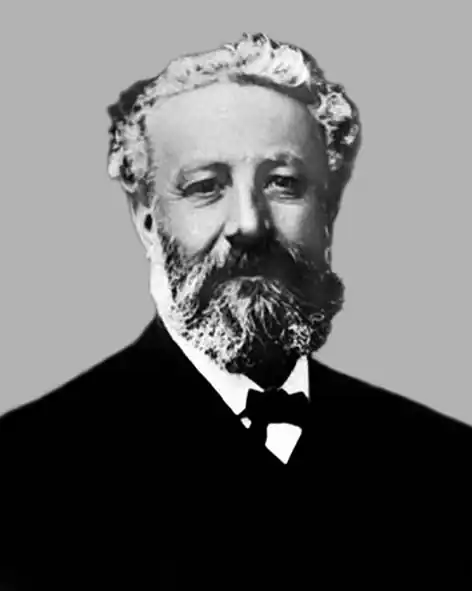

Авдиковський Орест Арсенович народився 23 квітня 1842, с. Подусів, нині Перемишлянського району Львівської області.
Навчався в гімназіях у містах Бережанах (від 1856), згодом — Станиславові (нині — Івано-Франківськ), закінчив правничий факультет Львівського університету.
Проживав у с. Мостищі (нині Калуського району Івано-Франківської області), згодом переїхав до Львова. Працював у редакції газети "Extrablatt" (м. Відень, Австрія), "Слово" (м. Львів), згодом — у періодичних виданнях "Пролом", "Новий пролом" (засновник і співвидавець), "Віче", "Червонная Русь", "Галицькая Русь" і "Галичанин". У 1882 році виступав на вічі у Львові з рефератом "про відобранне переданого в р. 1882, у власть Єзуїтів монастиря оо. Василіян в Добромилі". Помер у Львові 10 серпня 1913 року, похований у спільній гробниці літераторів та учених руської орієнтації на Личаківському цвинтарі, поле № 72.